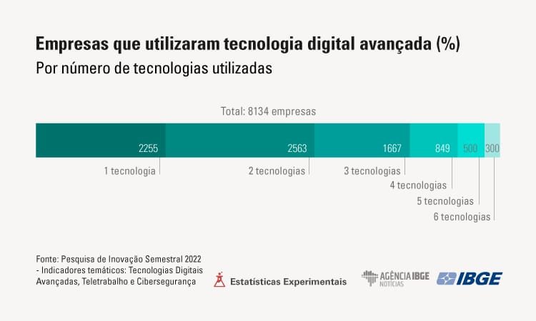

Automação no Mercado de Tarbalho
⠀ Em geral a sociedade tem medo da automação industrial substitua algumas
funções, mas ela também cria outros e transforma alguns, a automação é o
trabalho que automatiza as coisas, fazendo que algumas tarefas tenham o
mínimo de interferência humana assim diminuindo erros e tornando produções
mais ágeis e eficientes, é mesmo com risco de substituição de empregos os
Cientista de Dados e Especialista em Cibersegurança só existe por conta dela,
por exemplo. E com o aumento do uso da tecnologia na área de trabalho os
principais dados na área de Automação é a integração de tecnologias como a IA,
sendo uma área em crescimento constante foi estimado que em 2025 o mercado
de automação industrial foi estimado em torno de U$ 200 bilhões e que em 2030
tenha uma taxa de crescimento de 10,8% e as expectativas ainda estão mais
altas, esperando que em 2035 o mercado se expanda para mais que U$ 600
bilhões.
⠀ Ainda enfrentando o desafio da compatibilidade entre sistemas antigos e a
cibersegurança a integração de IA (inteligência artificial) e Io T ( internet das
coisas) são cruciais para automação a permitindo mais agilidade e praticidade,
apesar disso a mão de obra qualificada na área é procurada e vai aumentar de
forma significativa.
⠀ É importante notar que cada produtor se foca em áreas diferentes oferecendo
diversas coisas: Siemens (uma das maiores produtoras de tecnologia de eficiência
energética e economia de recursos, oferecendo Controladores Lógicos); Schneider Electric ( Líder global em soluções digitais de gerenciamento
de energia e automação, focando em tecnologias para a Indústria 5.0 e
transformação digital); Rockwell Automation (Empresa focada exclusivamente em automação
industrial e transformação digital, conhecida por suas soluções de
manufatura inteligente); ABB ( Uma das pioneiras no mercado, é uma das principais empresas em
soluções de energia e automação, sendo também uma das maiores
fabricantes de robôs industriais do mundo); Mitsubishi Electric (Gigante japonesa que fornece uma ampla gama de
produtos e soluções de automação industrial, incluindo PLCs, robôs e
software).

Dados de 2023:
• Em 2022, 84,9% (8.134) das 9.586 empresas industriais com 100 ou mais pessoas ocupadas utilizaram pelo menos uma tecnologia digital avançada.
• A computação em nuvem foi a mais declarada (73,6%), seguida por internet das coisas (48,6%), robótica (27,7%), análise de big data (23,4%), manufatura aditiva (19,2%) e inteligência artificial (16,9%).
• A maioria das empresas investigadas (31,5%) fez uso de duas tecnologias e 27,7% utilizaram apenas uma. Somente 3,7% das empresas fizeram uso de todas as tecnologias investigadas.
• Os maiores percentuais de uso localizado por área/função se deram: em desenvolvimento de projetos, para a utilização de análise de big data (78,8%); em produção, para a utilização de computação em nuvem (71,2%), inteligência artificial (84,8%), internet das coisas (76,7%) e manufatura aditiva (88,2%); e em comercialização, para a utilização de robótica (84,3%).
• Todas as tecnologias mostraram os maiores percentuais de utilização abrangente na área/função de administração, sendo o maior percentual verificado para a tecnologia de análise de big data (45,7%).
• O benefício mais apontado no uso de tecnologia digital avançada foi a maior flexibilidade em processos administrativos, produtivos e organizacionais (89,8%), seguido pelo aumento da eficiência (87,6%).
• Entre os fatores para adotar as tecnologias nas empresas, as maiores proporções ficaram com a estratégia autônoma da empresa (87,0%) e a influência de fornecedores e/ou clientes (63,0%).
• Os principais fatores que dificultaram o uso de tecnologias foram os altos custos (80,8%), a falta de pessoal qualificado na empresa (54,6%) e riscos econômicos excessivos (49,5%).
• Quase metade (47,8%) das empresas industriais com 100 ou mais pessoas ocupadas implementou o teletrabalho em pelo menos algum grau.
⠀ Na década de 1980 a automação quase não existia no Brasil, agora a área em crescimento, tendo 1800 empresas de automação no país, porém, ainda está enfrentando muitos desafios tanto pela infraestrutura tanto pela capacitação de profissionais, mas o país busca avançar com investimento apesar de ainda ser menor que a média global.
⠀ Técnicos são mais demandados em áreas como automobilística, na alimentícia e de bebidas, Petroquímica e Energia, Mineração e Siderúrgica e Logística. Os profissionais normalmente atuam com manutenção e integração de sistemas, CLPs ( programação de controladores lógicos programáveis) e Otimizações de processos. Essas áreas são as mais comuns por oferecerem eficiência operacional, aumento de produção e reduções de custos então tem muitas vagas de emprego, salários competitivos e a possibilidade de trabalhar com tecnologia de ponta, além da natureza desafiadora e multidisciplinar do trabalho. Os empregos estão concentrados na região Sudeste (em estados como São Paulo, Minas Gerais e Rio de Janeiro) por ter a maior concentração de empresas e por consequência maior procura de profissionais.
⠀ A cidade de Hortolândia é polo industrial significativo, apesar de não ter sido possível encontrar a taxa específica de empregabilidade, as empresas de tecnologia e logística representam 38% do PIB da indústria, algumas das empresas presentes na cidade são por exemplo:
❖ Nova Química: é uma das maiores empresas do segmento de medicamentos genéricos no Brasil e faz parte do Grupo NC, que também controla a EMS. As empresas usam a automação para garantir qualidade, para embalagens e regulatória na produção.
❖ Clube Marelli Hortolândia (CMH): Para essa empresa a automação é crucial, já que ela atua no setor automotivo, então para a montagem, garantia da qualidade, para gestão de dados e para manutenção ( prever falhas e resolvê-las antes que acontecer) a área é essencial.
❖ Refrio: Utiliza a automação para otimizar suas operações no setor de refrigeração e climatização desse jeito melhora os processos de fabricação, aumentando a eficiência e reduzindo erros. Sistemas automatizados monitoram a qualidade dos produtos e facilitam a gestão de estoques, permitindo um controle mais eficaz dos materiais. A coleta de dados em tempo real ajuda a identificar tendências e otimizar processos, enquanto sensores monitoram o desempenho dos equipamentos, possibilitando a manutenção preditiva.
⠀ Isso melhora a competividade das empresas no mercado, a eficiência operacional, agilizam os processos de produção e de organização de dados e reduz os custos.
⠀ O salário de um iniciante como técnico fica em torno de 3.981 a 5.494 Reais por mês.
Visão do Grupo: O grupo fica dividido entre não querer e querer e nem todos decidiram que área vão atuar e preferem conhecer mais a área. Isso pode mudar no futuro.